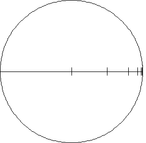

Sample calculation
|  |
| More precisely, suppose the Poincare disc has center the origin and radius 1. |
| The formula for computing the hyperbolic distance along a geodesic is a line integral. |
| The integral becomes much simpler in the special case of calculating
hyperbolic lengths along the |
| The hyperbolic distance between the
origin and the point |
| First, it is easy to see that |
| Second, to make the marks on the hyperbolic ruler above we began by noting |
| hdist(0,1/2) = ln((3/2)/(1/2)) = ln(3) |
| The second mark on the ruler is the number b satisfying |
| 2*ln(3) = hdist(0,b), so |
| In general, the nth mark of the ruler is at
|
| This is a quantitative expression of how hyperbolic distance appears to distort. |
Return to yyperbolic distance and triangle congruency.